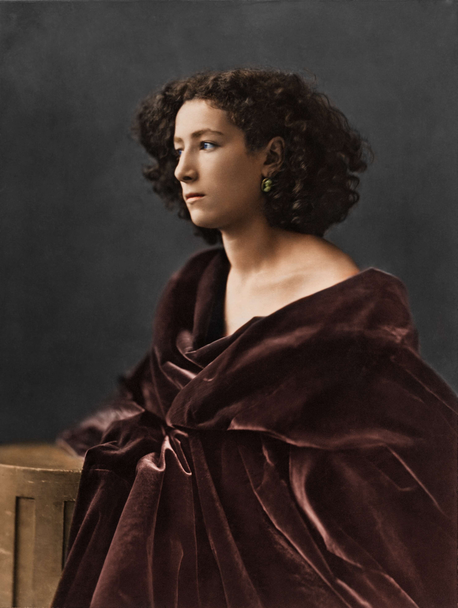
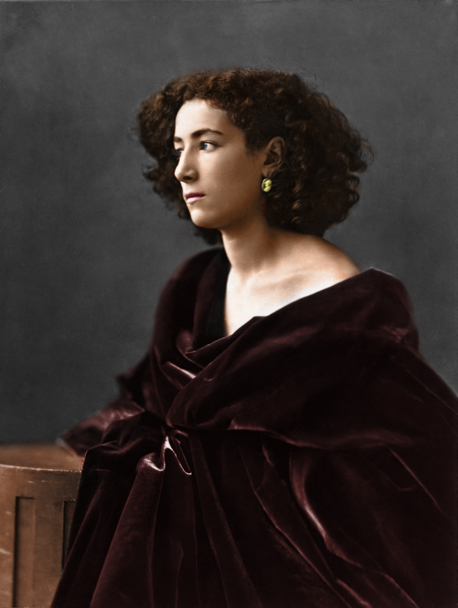
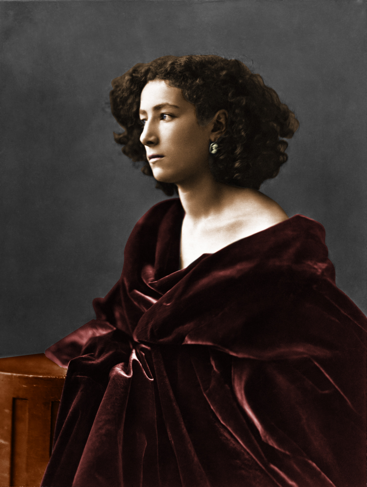
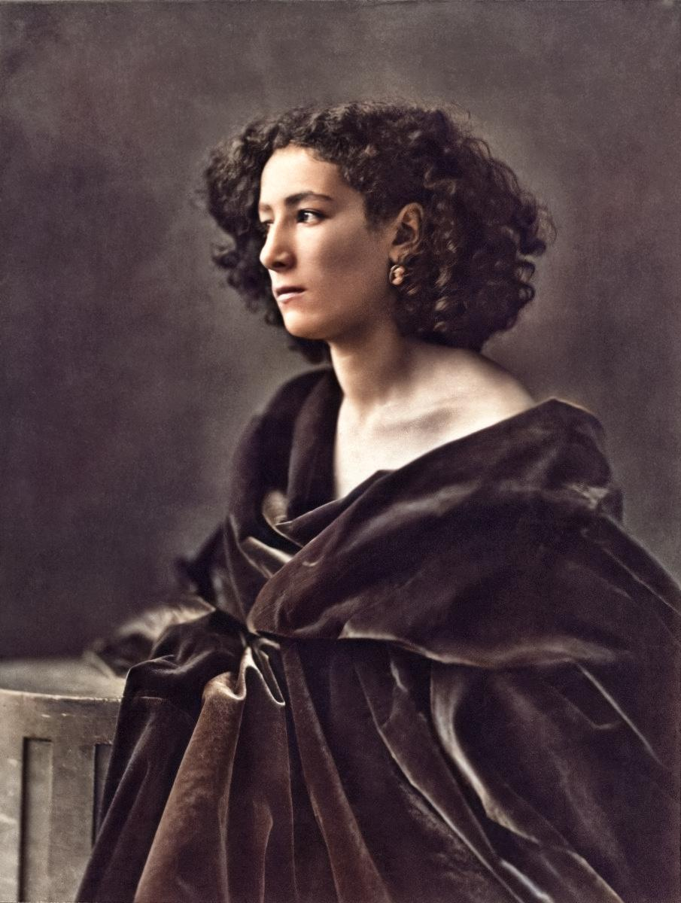

L'image de base :

Dans le cadre du cours de design numérique, nous nous sommes intéressés aux photographies monochromes ainsi qu'à la photographie en général. C'est un cours qui a été associé à la pratique de la photographie au sein de l'Université Gustave Eiffel. Il nous a été possible de retoucher les photos prises dans le cadre du cours de design numérique.
Pour ce projet, la mission a été de mettre en pratique les techniques de recoloration.
Première méthode : afin de parvenir à redonner de la couleur à une photographie, il est possible de passer par quatre méthodes différentes. Ici, la première dont l'idée est d'appliquer des couleurs sur différentes parties de l'image à l'aide de calques de réglage nommés « Courbes ». On peut constater le résultat ci-dessous.

Deuxième méthode : la deuxième méthode consiste à coloriser à l'aide de calques de remplissage où la recherche s'est concentrée sur la bonne couleur pour les tons chair. Ici, le mode de fusion le plus adapté a été l'incrustation, beaucoup plus subtil.

Troisième méthode : la troisième technique est l'utilisation de courbes de transfert de dégradés. C'est une technique utilisée par le photographe Sean Tucker. On peut d'ailleurs retrouver une vidéo montrant cette technique ici.

Quatrième méthode : pour cette technique, c'est l'utilisation de l'intelligence artificielle qui est à l'honneur. Une agence gouvernementale de Singapour, GovTech, a mis à disposition des internautes un outil de conversion d'images noir et blanc en couleur, fonctionnant selon le principe du « deep learning » pour coloriser des photographies anciennes noir et blanc de Singapour. Le but de cet outil est de générer une image avec des couleurs plausibles, sans pour autant garantir une représentation fidèle de la scène photographiée à l'époque.
